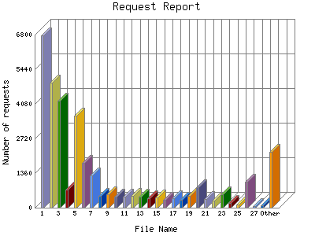

Analog 5.24
Analog 5.24 Report Magic for Analog 2.13
Report Magic for Analog 2.13The Request Report identifies the most popular web pages on the site and how often they were accessed.
This report is sorted by number of requests.

| File Name | Number of requests | Number of requests in the last 7 days | Percentage of bytes transferred in the last 7 days | |
|---|---|---|---|---|
| 1. | /index.aspx | 6,756 | 223 | 10.87% |
| 2. | /store.aspx | 4,918 | 155 | 9.2% |
| 3. | /meet.aspx | 4,194 | 151 | 6.64% |
| 4. | /manager/vieworder.asp | 711 | 108 | 5% |
| 5. | /news_item.aspx | 3,625 | 107 | 4.31% |
| 6. | /about.aspx | 1,755 | 56 | 2.56% |
| 7. | /news.aspx | 1,258 | 54 | 2.29% |
| 8. | /meet_james.asp | 479 | 53 | 3.58% |
| 9. | /meet_mark.asp | 511 | 51 | 3.76% |
| 10. | /meet_guido.asp | 442 | 51 | 3.9% |
| 11. | /meet_jerry.asp | 420 | 50 | 3.20% |
| 12. | /meet_eric.asp | 467 | 49 | 3.39% |
| 13. | /meet_fitz.asp | 432 | 47 | 3.3% |
| 14. | /meet_jamie.asp | 379 | 45 | 2.59% |
| 15. | /meet_rich.asp | 400 | 42 | 2.61% |
| 16. | /images/store_noflash.aspx | 305 | 42 | 0.91% |
| 17. | /meet_sam.asp | 386 | 41 | 2.100% |
| 18. | /images/index_noflash.aspx | 324 | 38 | 0.80% |
| 19. | /meet_tom.asp | 452 | 38 | 2.56% |
| 20. | /supporters.aspx | 795 | 36 | 2.12% |
| 21. | /meet_daryll.asp | 341 | 33 | 2% |
| 22. | /meet_lexsee.asp | 287 | 31 | 2.10% |
| 23. | /contact.aspx | 527 | 23 | 0.87% |
| 24. | /images/news_noflash.aspx | 186 | 16 | 0.31% |
| 25. | /images/about_noflash.aspx | 125 | 10 | 0.20% |
| 26. | /meet_noflash.aspx | 1,022 | 7 | 0.60% |
| 27. | /manager/viewprocessedorders.asp | 61 | 6 | 17.91% |
| 28. | /images/supporters_noflash.aspx | 80 | 6 | 0.11% |
| 29. | /store_cart.aspx | 1,145 | 4 | 0.24% |
| 30. | /manager/index.asp | 201 | 4 | 0.10% |
| 31. | /manager/main.asp | 723 | 4 | 0.10% |
| 32. | /images/contact_noflash.aspx | 65 | 3 | 0.6% |
| 33. | /contact_thankyou.aspx | 53 | 3 | 0.11% |
| [not listed: 99] | 16,877 | 0 | 0% | |
This report was generated on December 9, 2007 02:23.
Report time frame September 9, 2007 05:00 to December 9, 2007 05:55.
| Web statistics report produced by: | |
| Analog 5.24 | Report Magic for Analog 2.13 |